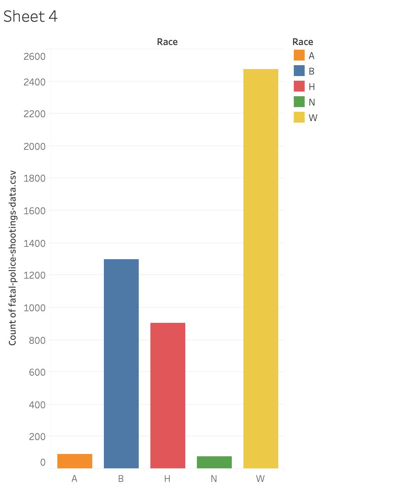

Fatal Police Shooting
Data and Trends
-
Three policies officers fired at Andrew Brown Jr. last month. Officers claimed Brown posed a threat to them as he “recklessly” drove his car at them while fleeing arrest.
Three of the seven officers at the scene fired a total of 14 shots at Brown. This is a tragic outcome no matter the shooting was justified by law or not.
-
History of Fatal Police Shootings
Fatal police shooting has always been a problem in the United States. When police have guns, they inevitablely use it under certain scenerios. The plot above shows the trends of fatal police shootings in the past 5 years (starting in 2015). The shooting counts both justified and unjustified cases. Several famous unjustified fatal police shootings are annotated on the plot. Evidently, there are no clear increasing or decreasing trends of fatal police shootings, but the topic popularity online has skyrocketed after each of the major unjustified shootings.
Google Search Trend of Keyward: “Fatal Police Shooting”
Two peaks in hot search is evident from the google data. One followed after the death of Walter Scott, and the other peak follows George Floyd’s death. Recently you may have felt the prevalence of fatal police shooting is higher than ever, but from the two plots above, we see no correlation between total fatal police shootings and search trends. Our perception of the fatal police shooting may be directed by the amount of news articles circulating the internet.
-
Which States Sees the Most Fatal Police Shootings?
Another problem we may ignore by looking at the national news websites is that fatal police shootings may be local problems. Often when we see something viral online, we want to think the event happened close to us and we begin to worry. But from the map below, we see that fatal police shootings are much denser in states like California and Texas compared to Nevada and Oregon.
 To emphasize on the distribution of fatal police shootings counts across the different states, the treemap below is a better visualization that allows you to compare between the sizes of each box (corresponding to a state). The larger the box, the higher the count of death due to police shootings.
To emphasize on the distribution of fatal police shootings counts across the different states, the treemap below is a better visualization that allows you to compare between the sizes of each box (corresponding to a state). The larger the box, the higher the count of death due to police shootings.

Combining the Map and Treemap visualization shown above, it seems that the state of California has the highest fatal police shootings across the nation. However, it is also important to notice that California has the largest population in the nation. Thus, it would be unwise to only look at the number itself without taking considerations of the population at each state. Therefore, we normalized previous map by each state’s population.
Location Normalized:
After normalized map according to each state’s population, a deeper color here meant a higher fatal police shooting per million people. From this normalized map, we notice that Virginia has the highest fatal police shooting per million people followed by Alabama, New York. This is not surprising considering the economy in those states. While some might believe New York is a outlier due to the famous New York City, it is also important to realize that the majority of wealth is concentrated in midtown New York City and economy on many other parts in New York state are not as wealthy as Wall Street.
Age:

From this bar plot, we notice the majority of fatal police shooting victims are around age 25-34. Despite only a few cases, we also saw fatal police shootings on children as well as elderly people. This is concerning because ch
Race:
We now decided to take a look at race factor in those police shootings. It is a well-known concern that the police has unfairly targeted minority group over the years. We would like to know whether our data confirms that concern. In our next visualizations, A stands for Asian, B stands for African American, H stands for Hispanic, N stands for Native Americans, W stands for non-Hispanic White people.
At our first glance of the data, it seems like White non-Hispanic make up the most cases in our plot. Before jumping to conclusions that our data refute that concern of systematic racism in the police force, we should notice that White non-Hispanic population are around 70% in the entire population. Therefore, we should normalize our data by population like what we did in previous part.
After normaliztion, it seems like Native and African Americans are having the worst treatement of law enforcemnet treatement with a higher higher fatal police shooting per million people than white non-Hispanic Americans. This confirms our concern that law enforcemnet body has unfairly discriminate against minority groups that resulted in a higher police shooting per capita. Our perception here is that the systematic racism is not only limited in police enforcemnet. The overall higher rate of fatal police shootings in minority groups are result of systematic racism across many sectors. For example, minority groups are not well represented in local governments which resulted in less favorable policy. Discrimination at work prevent them to provide a better life to their family which resulted in a higher unemployment rate and thus higher crime rate. The higher the crime rate, the higher fatal police shootings and that would only get worse as time goes on.
Insights and Discussions
Through those visualizations, we notice the significant differences in fatal police shooting across different parts of the nation and different racial groups. While we will look further in to those factors in our next steps of study.
Plans for next steps
In our next step of project, we decided to look deeper into location and race factor here. Through location, we would like to separate fatal police shooting cases in urban and rural areas. We plan to also include the factor of economy using location data.
As to visualizations, we plan to add more interactive elements in our website. For example, a scrolling bar for the yearly change in fatal police shooting across the nation and in each state. In addition, to better visualize the race factor in each state, we decided to create numerous smaller aggregated form of treemap for each state.
Data Source
Link:
https://www.kaggle.com/mrmorj/data-police-shootings
https://www.kaggle.com/muonneutrino/us-census-demographic-data License CC BY-SA 4.0